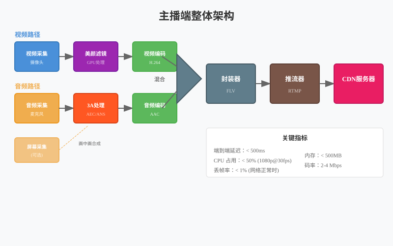

音视频开发实战
第16章：主播端架构
| 项目 | 内容 |
|---|---|
| 本章目标 | 掌握主播端架构的核心概念和实践 |
| 难度 | ⭐⭐⭐⭐ 高 |
| 前置知识 | Ch10-15：采集、美颜、编码 |
| 预计时间 | 4-5 小时 |
本章引言
本章目标：整合采集、处理、编码、推流，实现完整的主播端 Pipeline。
在前面的章节中，我们已经完成了主播端的所有核心组件： - Ch10-Ch14：音视频采集（摄像头、麦克风、屏幕、多摄像头） - Ch15：美颜滤镜（双边滤波磨皮、LUT 调色） - Ch12-Ch13：编码与推流（H.264/H.265、RTMP）
本章将这些组件整合为一个完整的 Pipeline，实现可开播的主播端系统。这不仅是技术的整合，更是架构设计思想的实践：模块解耦、状态管理、错误恢复、性能优化。
学习本章后，你将能够： - 设计可扩展的直播 Pipeline 架构 - 实现状态机管理主播端生命周期 - 处理网络波动、编码失败等异常情况 - 优化端到端延迟和系统资源占用
目录
1. 主播端架构全景
1.1 系统整体架构
flowchart TB
subgraph "应用层 UI"
UI1["开始/停止按钮"]
UI2["参数调节"]
UI3["状态显示"]
UI4["日志输出"]
end
subgraph "业务逻辑层"
BL1["状态机管理\nStateMachine"]
BL2["错误处理器\nErrorHandler"]
BL3["性能监控器\nPerformanceMonitor"]
end
subgraph "Pipeline 层"
P1["采集模块\nCapture"] --> P2["处理模块\nProcessor"]
P2 --> P3["编码模块\nEncoder"]
P3 --> P4["推流模块\nPusher"]
end
subgraph "基础能力层"
B1["线程池"]
B2["GPU 管理"]
B3["网络库"]
B4["日志系统"]
end
UI1 -.-> BL1
BL1 -.-> P1
BL2 -.-> P4
B1 -.-> P1
B2 -.-> P2
B3 -.-> P4
style P1 fill:#e3f2fd,stroke:#4a90d9
style P2 fill:#fff3e0,stroke:#f0ad4e
style P3 fill:#e8f5e9,stroke:#5cb85c
style P4 fill:#fce4ec,stroke:#e91e63
架构分层：
┌─────────────────────────────────────────────────────────────┐
│ 应用层（UI 控制） │
│ 开始/停止按钮 · 参数调节 · 状态显示 · 日志输出 │
├─────────────────────────────────────────────────────────────┤
│ 业务逻辑层 │
│ ┌─────────────┐ ┌─────────────┐ ┌─────────────────────┐ │
│ │ 状态机管理 │ │ 错误处理器 │ │ 性能监控器 │ │
│ │ StateMachine│ │ErrorHandler │ │PerformanceMonitor │ │
│ └─────────────┘ └─────────────┘ └─────────────────────┘ │
├─────────────────────────────────────────────────────────────┤
│ Pipeline 层 │
│ ┌──────────┐ ┌──────────┐ ┌──────────┐ ┌────────┐ │
│ │ 采集模块 │ → │ 处理模块 │ → │ 编码模块 │ → │ 推流模块│ │
│ │Capture │ │Processor │ │ Encoder │ │ Pusher │ │
│ └──────────┘ └──────────┘ └──────────┘ └────────┘ │
├─────────────────────────────────────────────────────────────┤
│ 基础能力层 │
│ ┌──────────┐ ┌──────────┐ ┌──────────┐ ┌──────────────┐ │
│ │ 线程池 │ │ GPU 管理 │ │ 网络库 │ │ 日志系统 │ │
│ │ThreadPool│ │ GpuContext│ │ Network │ │ Logger │ │
│ └──────────┘ └──────────┘ └──────────┘ └──────────────┘ │
└─────────────────────────────────────────────────────────────┘1.2 数据流详解
视频数据流：
摄像头/屏幕采集 → 原始帧(YUV/RGB)
↓
┌─────────────────┐
│ 美颜处理 │ GPU 磨皮、美白、LUT 调色
│ (BeautyProcessor)│
└─────────────────┘
↓
┌─────────────────┐
│ 视频编码 │ H.264/H.265 硬件编码
│ (VideoEncoder) │
└─────────────────┘
↓
┌─────────────────┐
│ 封装推流 │ FLV 封装 + RTMP 推送
│ (RtmpPusher) │
└─────────────────┘音频数据流：
麦克风采集 → 原始 PCM 音频帧
↓
┌─────────────────┐
│ 3A 处理 │ AEC/ANS/AGC
│ (AudioProcessor) │
└─────────────────┘
↓
┌─────────────────┐
│ 音频编码 │ AAC 编码
│ (AudioEncoder) │
└─────────────────┘
↓
┌─────────────────┐
│ 封装推流 │ 与视频混合封装
│ (RtmpPusher) │
└─────────────────┘1.3 关键性能指标
| 指标 | 目标值 | 测量方法 |
|---|---|---|
| 端到端延迟 | < 500ms | 采集时间戳到播放器显示 |
| CPU 占用 | < 50% | 系统监控 |
| 内存占用 | < 500MB | 进程内存统计 |
| 丢帧率 | < 1% | 编码帧数/采集帧数 |
| 编码延迟 | < 50ms | 帧进入编码器到输出 |

2. 模块划分与接口设计
2.1 设计原则
单一职责原则（SRP）： 每个模块只负责一个明确的功能，便于测试和维护。
依赖倒置原则（DIP）： 模块间依赖抽象接口，不依赖具体实现，便于替换算法。
开闭原则（OCP）： 对扩展开放（可以添加新的滤镜、编码器），对修改封闭。
2.2 核心接口定义
视频采集接口：
// IVideoCapture.h
class IVideoCapture {
public:
virtual ~IVideoCapture() = default;
// 初始化采集设备
virtual bool Init(const CaptureConfig& config) = 0;
// 开始/停止采集
virtual bool Start() = 0;
virtual void Stop() = 0;
// 设置帧回调
virtual void SetFrameCallback(FrameCallback callback) = 0;
// 查询设备能力
virtual std::vector<Resolution> GetSupportedResolutions() = 0;
virtual std::vector<int> GetSupportedFps() = 0;
};
// 配置结构
struct CaptureConfig {
std::string device_id; // 设备标识
int width = 1920; // 采集宽度
int height = 1080; // 采集高度
int fps = 30; // 采集帧率
PixelFormat format = PixelFormat::YUV420P;
};视频处理接口（美颜滤镜）：
// IVideoProcessor.h
class IVideoProcessor {
public:
virtual ~IVideoProcessor() = default;
// 初始化处理管线
virtual bool Init(int width, int height) = 0;
// 处理一帧
virtual void Process(const GpuTexture* input,
GpuTexture* output) = 0;
// 动态调节参数
virtual void SetBeautyStrength(float strength) = 0;
virtual void SetBrightness(float level) = 0;
virtual void EnableFilter(const std::string& name, bool enable) = 0;
// 释放资源
virtual void Release() = 0;
};编码器接口：
// IEncoder.h
class IEncoder {
public:
virtual ~IEncoder() = default;
// 初始化编码器
virtual bool Init(const EncoderConfig& config) = 0;
// 编码一帧
virtual bool Encode(const Frame* frame) = 0;
// 获取编码后的数据包
virtual EncodedPacket* GetPacket() = 0;
// 动态调整码率
virtual void SetBitrate(int bitrate_bps) = 0;
// 请求关键帧
virtual void RequestKeyframe() = 0;
// 刷新编码器（发送剩余数据）
virtual void Flush() = 0;
// 释放资源
virtual void Release() = 0;
};
struct EncoderConfig {
int width = 1920;
int height = 1080;
int fps = 30;
int bitrate = 4000000; // 4 Mbps
std::string codec = "h264"; // h264/h265/av1
bool use_hardware = true; // 使用硬件编码
};推流接口：
// IRtmpPusher.h
class IRtmpPusher {
public:
virtual ~IRtmpPusher() = default;
// 连接服务器
virtual bool Connect(const std::string& url) = 0;
// 发送音视频数据
virtual bool PushVideo(const EncodedPacket* packet) = 0;
virtual bool PushAudio(const EncodedPacket* packet) = 0;
// 获取连接状态
virtual ConnectionState GetState() = 0;
// 断开连接
virtual void Disconnect() = 0;
};
enum class ConnectionState {
Disconnected, // 未连接
Connecting, // 连接中
Connected, // 已连接
Reconnecting, // 重连中
Error // 错误
};2.3 模块配置结构
// 完整的主播端配置
struct StreamerConfig {
// 视频采集配置
struct VideoCapture {
std::string source = "camera"; // camera/screen/window
std::string device_id; // 设备标识
int width = 1920;
int height = 1080;
int fps = 30;
} video_capture;
// 音频采集配置
struct AudioCapture {
std::string device_id;
int sample_rate = 48000;
int channels = 2;
} audio_capture;
// 美颜处理配置
struct Beauty {
bool enabled = true;
float strength = 0.5f; // 磨皮强度 0.0-1.0
float brightness = 1.1f; // 亮度调节
std::string lut_file; // LUT 文件路径
} beauty;
// 音频 3A 配置
struct Audio3A {
bool aec_enabled = true; // 回声消除
bool ans_enabled = true; // 噪声抑制
bool agc_enabled = true; // 自动增益
} audio_3a;
// 视频编码配置
struct VideoEncode {
std::string codec = "h264"; // h264/h265/av1
int bitrate = 4000000; // 4 Mbps
int fps = 30;
bool use_hardware = true;
} video_encode;
// 音频编码配置
struct AudioEncode {
int bitrate = 128000; // 128 kbps
} audio_encode;
// 推流配置
struct Stream {
std::string rtmp_url;
int reconnect_attempts = 3; // 重连次数
int reconnect_delay_ms = 2000; // 重连间隔
} stream;
};3. Pipeline 数据流设计
3.1 线程模型
主播端涉及多个耗时操作，必须使用多线程并行处理：
┌─────────────────────────────────────────────────────────────┐
│ 采集线程（高优先级） │
│ 摄像头采集 ──────→ 帧缓冲队列（无锁） │
│ 麦克风采集 ──────→ 音频缓冲队列 │
├─────────────────────────────────────────────────────────────┤
│ 处理线程 │
│ 美颜处理 ←──────── 帧缓冲队列 │
│ 3A 处理 ←──────── 音频缓冲队列 │
├─────────────────────────────────────────────────────────────┤
│ 编码线程 │
│ 视频编码 ←──────── 处理后帧队列 │
│ 音频编码 ←──────── 处理后音频队列 │
├─────────────────────────────────────────────────────────────┤
│ 推流线程 │
│ 封装 ←──────── 编码后数据队列 │
│ 网络发送 ←────── 封装后数据 │
└─────────────────────────────────────────────────────────────┘线程间通信： - 使用无锁队列（Lock-free Queue）传递数据 - 每个线程独立，避免阻塞 - 队列深度控制（防止内存无限增长）
3.2 无锁队列实现
// 单生产者单消费者无锁队列
template<typename T, size_t Capacity>
class LockFreeQueue {
public:
bool Push(const T& item) {
size_t current_tail = tail_.load(std::memory_order_relaxed);
size_t next_tail = (current_tail + 1) % Capacity;
if (next_tail == head_.load(std::memory_order_acquire)) {
return false; // 队列满
}
buffer_[current_tail] = item;
tail_.store(next_tail, std::memory_order_release);
return true;
}
bool Pop(T& item) {
size_t current_head = head_.load(std::memory_order_relaxed);
if (current_head == tail_.load(std::memory_order_acquire)) {
return false; // 队列空
}
item = buffer_[current_head];
head_.store((current_head + 1) % Capacity, std::memory_order_release);
return true;
}
private:
alignas(64) std::array<T, Capacity> buffer_;
alignas(64) std::atomic<size_t> head_{0};
alignas(64) std::atomic<size_t> tail_{0};
};3.3 Pipeline 完整流程
class StreamPipeline {
public:
bool Initialize(const StreamerConfig& config) {
// 1. 初始化采集模块
video_capture_ = CreateVideoCapture(config.video_capture.source);
video_capture_- > Init(config.video_capture);
video_capture_- > SetFrameCallback(
[this](VideoFrame* frame) { OnVideoFrame(frame); });
// 2. 初始化处理模块
video_processor_ = CreateBeautyProcessor();
video_processor_- > Init(config.video_capture.width,
config.video_capture.height);
// 3. 初始化编码模块
video_encoder_ = CreateVideoEncoder(config.video_encode.codec);
video_encoder_- > Init(config.video_encode);
audio_encoder_ = CreateAudioEncoder();
audio_encoder_- > Init(config.audio_encode);
// 4. 初始化推流模块
pusher_ = CreateRtmpPusher();
return true;
}
bool Start() {
// 连接 RTMP 服务器
if (!pusher_- > Connect(config_.stream.rtmp_url)) {
return false;
}
// 启动采集
video_capture_- > Start();
audio_capture_- > Start();
// 启动处理线程
process_thread_ = std::thread(&StreamPipeline::ProcessLoop, this);
// 启动编码线程
encode_thread_ = std::thread(&StreamPipeline::EncodeLoop, this);
// 启动推流线程
push_thread_ = std::thread(&StreamPipeline::PushLoop, this);
return true;
}
private:
// 采集回调（采集线程）
void OnVideoFrame(VideoFrame* frame) {
// 打上采集时间戳
frame->pts = GetTimestampMs();
raw_video_queue_.Push(frame);
}
// 处理循环（处理线程）
void ProcessLoop() {
while (running_) {
VideoFrame* frame;
if (raw_video_queue_.Pop(frame)) {
// GPU 美颜处理
GpuTexture* processed = texture_pool_.Acquire();
video_processor_- > Process(frame->texture, processed);
processed->pts = frame->pts;
processed_video_queue_.Push(processed);
texture_pool_.Release(frame->texture);
}
}
}
// 编码循环（编码线程）
void EncodeLoop() {
while (running_) {
GpuTexture* texture;
if (processed_video_queue_.Pop(texture)) {
// 视频编码
video_encoder_- > Encode(texture);
EncodedPacket* packet;
while ((packet = video_encoder_- > GetPacket()) != nullptr) {
encoded_video_queue_.Push(packet);
}
texture_pool_.Release(texture);
}
}
}
// 推流循环（推流线程）
void PushLoop() {
while (running_) {
EncodedPacket* packet;
if (encoded_video_queue_.Pop(packet)) {
// 封装并推流
if (packet->is_video) {
pusher_- > PushVideo(packet);
} else {
pusher_- > PushAudio(packet);
}
packet_pool_.Release(packet);
}
}
}
// 模块
std::unique_ptr<IVideoCapture> video_capture_;
std::unique_ptr<IVideoProcessor> video_processor_;
std::unique_ptr<IEncoder> video_encoder_;
std::unique_ptr<IEncoder> audio_encoder_;
std::unique_ptr<IRtmpPusher> pusher_;
// 队列
LockFreeQueue<VideoFrame*, 30> raw_video_queue_;
LockFreeQueue<GpuTexture*, 30> processed_video_queue_;
LockFreeQueue<EncodedPacket*, 60> encoded_video_queue_;
// 线程
std::thread process_thread_;
std::thread encode_thread_;
std::thread push_thread_;
std::atomic<bool> running_{false};
};4. 状态机设计
4.1 为什么需要状态机
主播端的生命周期复杂： - 初始化 → 预览 → 连接 → 推流 → 停止 - 过程中可能遇到网络断开、编码失败等异常 - 每个状态下允许的操作不同（如连接中不能调整分辨率）
没有状态机，很容易出现： - 未初始化就调用 Start - 连接中调用 Stop 导致资源泄漏 - 错误状态下继续推流
4.2 状态机图
stateDiagram-v2
[*] --> Idle: 初始化
Idle --> Initializing: Initialize()
Initializing --> Previewing: 成功
Initializing --> Error: 失败
Previewing --> Connecting: StartStreaming()
Previewing --> Idle: Release()
Connecting --> Streaming: 连接成功
Connecting --> Error: 连接失败
Streaming --> Paused: Pause()
Streaming --> Idle: Stop()
Streaming --> Error: 网络错误
Paused --> Streaming: Resume()
Paused --> Idle: Stop()
Error --> Connecting: Reconnect()
Error --> Idle: Release()
note right of Idle
空闲状态
等待操作
end note
note right of Streaming
推流中
正常直播
end note
状态定义：
enum class StreamerState {
Idle, // 空闲：未初始化或已释放
Initializing, // 初始化中
Previewing, // 预览中：采集已启动，但未推流
Connecting, // 连接中：正在连接 RTMP 服务器
Streaming, // 推流中：正常直播
Paused, // 暂停：采集继续，但不推流
Error // 错误：发生不可恢复的错误
};状态转换表：
| 当前状态 | 可转换到 | 触发条件 |
|---|---|---|
| Idle | Initializing | 调用 Initialize() |
| Initializing | Previewing | 初始化成功 |
| Initializing | Error | 初始化失败 |
| Previewing | Connecting | 调用 StartStreaming() |
| Previewing | Idle | 调用 Release() |
| Connecting | Streaming | 连接成功 |
| Connecting | Error | 连接失败 |
| Streaming | Paused | 调用 Pause() |
| Streaming | Idle | 调用 Stop() |
| Streaming | Error | 推流错误 |
| Paused | Streaming | 调用 Resume() |
| Paused | Idle | 调用 Stop() |
| Error | Connecting | 调用 Reconnect() |
| Error | Idle | 调用 Release() |
4.3 状态机实现
class StreamerStateMachine {
public:
using StateCallback = std::function<void(StreamerState, StreamerState)>;
void SetStateCallback(StateCallback callback) {
callback_ = callback;
}
// 尝试状态转换
bool Transition(StreamerState new_state) {
std::lock_guard<std::mutex> lock(mutex_);
if (!IsValidTransition(state_, new_state)) {
LogError("Invalid state transition: {} -> {}",
StateToString(state_), StateToString(new_state));
return false;
}
StreamerState old_state = state_;
state_ = new_state;
LogInfo("State: {} -> {}", StateToString(old_state),
StateToString(new_state));
if (callback_) {
callback_(old_state, new_state);
}
return true;
}
StreamerState GetState() const {
std::lock_guard<std::mutex> lock(mutex_);
return state_;
}
// 检查是否允许某操作
bool CanStartStreaming() const {
return GetState() == StreamerState::Previewing;
}
bool CanPause() const {
return GetState() == StreamerState::Streaming;
}
bool CanAdjustResolution() const {
auto state = GetState();
return state == StreamerState::Idle ||
state == StreamerState::Previewing;
}
private:
bool IsValidTransition(StreamerState from, StreamerState to) {
switch (from) {
case StreamerState::Idle:
return to == StreamerState::Initializing;
case StreamerState::Initializing:
return to == StreamerState::Previewing ||
to == StreamerState::Error;
case StreamerState::Previewing:
return to == StreamerState::Connecting ||
to == StreamerState::Idle;
case StreamerState::Connecting:
return to == StreamerState::Streaming ||
to == StreamerState::Error ||
to == StreamerState::Idle;
case StreamerState::Streaming:
return to == StreamerState::Paused ||
to == StreamerState::Idle ||
to == StreamerState::Error;
case StreamerState::Paused:
return to == StreamerState::Streaming ||
to == StreamerState::Idle;
case StreamerState::Error:
return to == StreamerState::Connecting ||
to == StreamerState::Idle;
}
return false;
}
StreamerState state_ = StreamerState::Idle;
mutable std::mutex mutex_;
StateCallback callback_;
};4.4 状态机与 UI 联动
class StreamerUI {
public:
void OnStateChanged(StreamerState old_state, StreamerState new_state) {
switch (new_state) {
case StreamerState::Idle:
start_preview_btn_.SetEnabled(true);
start_stream_btn_.SetEnabled(false);
stop_btn_.SetEnabled(false);
status_label_.SetText("就绪");
break;
case StreamerState::Previewing:
start_preview_btn_.SetEnabled(false);
start_stream_btn_.SetEnabled(true);
stop_btn_.SetEnabled(true);
status_label_.SetText("预览中");
break;
case StreamerState::Streaming:
start_stream_btn_.SetEnabled(false);
stop_btn_.SetEnabled(true);
status_label_.SetText("● 直播中");
break;
case StreamerState::Error:
ShowErrorDialog("推流错误，请检查网络");
status_label_.SetText("错误");
break;
}
}
};5. 错误处理与恢复策略
5.1 错误分类
| 错误类型 | 示例 | 严重程度 | 处理策略 |
|---|---|---|---|
| 网络错误 | 连接超时、发送失败 | 中 | 重连 |
| 编码错误 | 编码器初始化失败、丢帧 | 中 | 降级/重试 |
| 采集错误 | 摄像头断开、权限被拒绝 | 高 | 停止/提示用户 |
| 配置错误 | 分辨率不支持、码率过高 | 低 | 自动调整 |
| 系统错误 | 内存不足、GPU 故障 | 高 | 停止 |
5.2 错误处理架构
enum class ErrorSeverity {
Warning, // 警告，继续运行
Recoverable,// 可恢复，尝试恢复
Fatal // 致命，停止运行
};
struct StreamError {
ErrorType type;
ErrorSeverity severity;
std::string message;
std::chrono::time_point<std::chrono::steady_clock> timestamp;
};
class ErrorHandler {
public:
void SetStreamer(StreamerStateMachine* state_machine) {
state_machine_ = state_machine;
}
void HandleError(const StreamError& error) {
LogError("[{}] {}: {}",
SeverityToString(error.severity),
ErrorTypeToString(error.type),
error.message);
switch (error.severity) {
case ErrorSeverity::Warning:
HandleWarning(error);
break;
case ErrorSeverity::Recoverable:
HandleRecoverable(error);
break;
case ErrorSeverity::Fatal:
HandleFatal(error);
break;
}
}
private:
void HandleWarning(const StreamError& error) {
// 记录日志，继续运行
NotifyUI(error.message);
}
void HandleRecoverable(const StreamError& error) {
switch (error.type) {
case ErrorType::Network:
HandleNetworkError();
break;
case ErrorType::Encoder:
HandleEncoderError();
break;
default:
// 其他可恢复错误，尝试重试
ScheduleRetry(error);
break;
}
}
void HandleFatal(const StreamError& error) {
// 停止推流，切换到错误状态
state_machine_- > Transition(StreamerState::Error);
NotifyUser(error.message);
}
void HandleNetworkError() {
if (retry_count_ < max_retries_) {
retry_count_++;
// 指数退避：1s, 2s, 4s
int delay_ms = (1 << retry_count_) * 1000;
LogInfo("Network error, retrying in {}ms (attempt {}/{})",
delay_ms, retry_count_, max_retries_);
ScheduleReconnect(delay_ms);
} else {
// 重试次数耗尽
HandleFatal({ErrorType::Network, ErrorSeverity::Fatal,
"网络重试次数耗尽"});
}
}
void HandleEncoderError() {
// 尝试降级策略
if (TryLowerResolution()) {
LogInfo("Encoder error resolved by lowering resolution");
return;
}
if (TrySoftwareEncoder()) {
LogInfo("Encoder error resolved by switching to software");
return;
}
// 降级失败，报告致命错误
HandleFatal({ErrorType::Encoder, ErrorSeverity::Fatal,
"编码器初始化失败，降额无效"});
}
bool TryLowerResolution() {
auto config = current_config_;
if (config.video.width > 1280) {
config.video.width = 1280;
config.video.height = 720;
return ReinitEncoder(config);
}
return false;
}
bool TrySoftwareEncoder() {
auto config = current_config_;
if (config.video.use_hardware) {
config.video.use_hardware = false;
config.video.codec = "h264"; // 软件编码用 h264
return ReinitEncoder(config);
}
return false;
}
StreamerStateMachine* state_machine_;
int retry_count_ = 0;
const int max_retries_ = 3;
};5.3 网络重连策略
class NetworkRecoveryManager {
public:
void OnNetworkError() {
if (!state_machine_- > Transition(StreamerState::Reconnecting)) {
return;
}
// 保存当前状态
SaveStreamingState();
// 指数退避重连
for (int attempt = 1; attempt <= max_retries_; attempt++) {
int delay = CalculateBackoff(attempt);
LogInfo("Reconnect attempt {}/{} in {}s",
attempt, max_retries_, delay);
std::this_thread::sleep_for(std::chrono::seconds(delay));
if (TryReconnect()) {
LogInfo("Reconnection successful");
RestoreStreamingState();
state_machine_- > Transition(StreamerState::Streaming);
return;
}
}
// 重连失败
LogError("All reconnection attempts failed");
state_machine_- > Transition(StreamerState::Error);
}
private:
int CalculateBackoff(int attempt) {
// 指数退避：1, 2, 4 秒
int base = std::min(1 << (attempt - 1), 4);
// 添加随机抖动，避免雪崩
int jitter = rand() % 1000;
return base + jitter / 1000;
}
bool TryReconnect() {
pusher_- > Disconnect();
return pusher_- > Connect(config_.stream.rtmp_url);
}
void SaveStreamingState() {
saved_video_pts_ = last_video_pts_;
saved_audio_pts_ = last_audio_pts_;
}
void RestoreStreamingState() {
// 恢复时间戳（重要：防止断流后时间戳回退）
video_encoder_- > SetInitialPTS(saved_video_pts_);
audio_encoder_- > SetInitialPTS(saved_audio_pts_);
// 请求关键帧（确保恢复后画面可解码）
video_encoder_- > RequestKeyframe();
}
int max_retries_ = 3;
int64_t saved_video_pts_ = 0;
int64_t saved_audio_pts_ = 0;
};5.4 自适应码率（ABR）
class AdaptiveBitrateController {
public:
void OnNetworkReport(const NetworkStats& stats) {
// 计算丢包率和 RTT
float loss_rate = stats.lost_packets /
(float)(stats.sent_packets + stats.lost_packets);
// 状态机判断
NetworkCondition condition = EvaluateCondition(loss_rate, stats.rtt_ms);
switch (condition) {
case NetworkCondition::Good:
if (current_bitrate_ < target_bitrate_) {
IncreaseBitrate();
}
break;
case NetworkCondition::Fair:
// 维持现状
break;
case NetworkCondition::Poor:
DecreaseBitrate();
break;
case NetworkCondition::Bad:
// 严重拥塞，大幅降码率
current_bitrate_ = min_bitrate_;
ApplyBitrateChange();
break;
}
}
private:
NetworkCondition EvaluateCondition(float loss_rate, int rtt_ms) {
if (loss_rate > 0.05f || rtt_ms > 500) {
return NetworkCondition::Bad;
} else if (loss_rate > 0.02f || rtt_ms > 200) {
return NetworkCondition::Poor;
} else if (loss_rate > 0.01f || rtt_ms > 100) {
return NetworkCondition::Fair;
}
return NetworkCondition::Good;
}
void IncreaseBitrate() {
// 每次增加 10%，不超过目标码率
current_bitrate_ = std::min(
(int)(current_bitrate_ * 1.1), target_bitrate_);
ApplyBitrateChange();
}
void DecreaseBitrate() {
// 每次减少 20%，不低于最小码率
current_bitrate_ = std::max(
(int)(current_bitrate_ * 0.8), min_bitrate_);
ApplyBitrateChange();
}
void ApplyBitrateChange() {
LogInfo("Adjusting bitrate to {} kbps", current_bitrate_ / 1000);
video_encoder_- > SetBitrate(current_bitrate_);
}
int target_bitrate_ = 4000000; // 4 Mbps
int min_bitrate_ = 500000; // 500 kbps
int current_bitrate_ = 4000000;
};6. 音视频同步机制
6.1 为什么需要同步
音视频是独立采集、独立编码的： - 视频：30fps，每帧 33ms，由采集卡/摄像头驱动产生时间戳 - 音频：每 20ms 一帧（AAC 1024 采样 @ 48kHz），由声卡产生时间戳
如果没有同步机制，播放端会出现： - 音画不同步（音频超前或滞后） - 长期累积误差导致偏差越来越大
6.2 时间戳与同步原理
flowchart TB
subgraph "视频流 30fps"
V1["帧0\nPTS: 0ms"] --> V2["帧1\nPTS: 33ms"]
V2 --> V3["帧2\nPTS: 66ms"]
V3 --> V4["帧3\nPTS: 99ms"]
end
subgraph "音频流 48kHz"
A1["帧0\nPTS: 0ms"] --> A2["帧1\nPTS: 21ms"]
A2 --> A3["帧2\nPTS: 42ms"]
A3 --> A4["帧3\nPTS: 63ms"]
end
subgraph "同步目标"
S["| PTS 差值 | < 40ms\n(约 1 帧容忍度)"]
end
V1 -.-> S
A1 -.-> S
style V1 fill:#e3f2fd,stroke:#4a90d9
style A1 fill:#e8f5e9,stroke:#5cb85c
style S fill:#fff3e0,stroke:#f0ad4e
关键概念： - PTS（Presentation Time Stamp）：显示时间戳，表示该帧应该在何时播放 - DTS（Decoding Time Stamp）：解码时间戳，表示该帧应该在何时解码（B 帧时需要） - Time Base：时间基准，如视频 1/30 秒，音频 1/48000 秒
时间戳生成：
// 视频时间戳（基于帧索引）
int64_t video_pts = frame_index * (1000 / fps); // 毫秒
// 音频时间戳（基于采样数）
int64_t audio_pts = sample_index * 1000 / sample_rate; // 毫秒6.3 同步策略选择
| 策略 | 说明 | 适用场景 |
|---|---|---|
| 音频为主 | 视频同步到音频 | 音乐直播、对音质要求高 |
| 视频为主 | 音频同步到视频 | 游戏直播、对画面要求高 |
| 外部时钟 | 都同步到系统时钟 | 专业直播、精确同步 |
直播场景推荐：以音频为主（音频时钟更稳定）。
6.4 同步实现
class AVSync {
public:
// 设置同步参考（通常选音频）
void SetMasterStream(StreamType type) {
master_stream_ = type;
}
// 视频帧同步检查
SyncAction SyncVideo(int64_t video_pts, int64_t audio_pts) {
int64_t diff = video_pts - audio_pts;
// 允许 ±40ms 误差（约 1 帧 @ 25fps）
if (std::abs(diff) < 40) {
return SyncAction::Normal; // 同步正常
}
if (diff > 40) {
// 视频超前，需要等待或丢弃
if (diff > 100) {
return SyncAction::DropFrame; // 丢帧追赶
}
return SyncAction::Wait; // 等待音频追上
} else {
// 视频滞后，需要重复帧
if (diff < -100) {
return SyncAction::RequestKeyframe; // 请求关键帧追赶
}
return SyncAction::RepeatFrame; // 重复上一帧
}
}
// 获取同步后的目标 PTS
int64_t GetSyncedPTS(int64_t original_pts, StreamType type) {
if (type == master_stream_) {
return original_pts; // 主时钟不变
}
// 从时钟根据主时钟调整
if (type == StreamType::Video) {
return AlignToAudioPTS(original_pts);
} else {
return AlignToVideoPTS(original_pts);
}
}
private:
// 将视频 PTS 对齐到音频帧边界
int64_t AlignToAudioPTS(int64_t video_pts) {
// 音频帧周期：21ms（@ 48kHz, 1024 samples）
const int64_t audio_frame_duration = 21;
return (video_pts / audio_frame_duration) * audio_frame_duration;
}
StreamType master_stream_ = StreamType::Audio;
};6.5 推流端同步实践
在推流端，同步的关键是确保音视频时间戳对齐：
void PushLoop() {
while (running_) {
// 获取音视频数据包
EncodedPacket* video_pkt = nullptr;
EncodedPacket* audio_pkt = nullptr;
video_queue_.Peek(video_pkt);
audio_queue_.Peek(audio_pkt);
if (!video_pkt || !audio_pkt) {
// 某一队列为空，等待
continue;
}
// 检查同步
int64_t diff = video_pkt->pts - audio_pkt->pts;
if (diff > 50) {
// 视频超前，先发送音频
pusher_- > PushAudio(audio_queue_.Pop());
} else if (diff < -50) {
// 音频超前，先发送视频
pusher_- > PushVideo(video_queue_.Pop());
} else {
// 同步，按 PTS 顺序发送
if (video_pkt->pts <= audio_pkt->pts) {
pusher_- > PushVideo(video_queue_.Pop());
} else {
pusher_- > PushAudio(audio_queue_.Pop());
}
}
}
}7. 性能优化实战
7.1 延迟优化
直播延迟来源分析：
| 环节 | 延迟 | 优化方法 |
|---|---|---|
| 采集 | 10-30ms | 选择低延迟设备 |
| 处理（美颜） | 2-5ms | GPU 加速，降采样 |
| 编码 | 30-50ms | 硬件编码，低延迟模式 |
| 网络发送 | 20-100ms | 优化网络，选择就近节点 |
| 播放器缓冲 | 100-300ms | 减小缓冲区（可能增加卡顿） |
| 总计 | 200-500ms | - |
低延迟编码配置：
// x264 低延迟配置
x264_param_t param;
x264_param_default_preset(¶m, "ultrafast", "zerolatency");
param.i_bframe = 0; // 禁用 B 帧（减少延迟）
param.rc.i_lookahead = 0; // 禁用前瞻（减少延迟）
param.i_sync_lookahead = 0;
// NVENC 低延迟配置
NV_ENC_CONFIG config;
config.rcParams.lowDelayKeyFrame = 1;
config.frameIntervalP = 1; // 禁用 B 帧7.2 CPU 优化
热点分析： 使用性能分析工具（如 perf、Instruments）找出 CPU 热点：
# Linux perf 分析
perf record -g ./streamer
perf report常见优化：
| 热点 | 优化方法 | 效果 |
|---|---|---|
| 颜色空间转换 | 使用 GPU/NEON/SSE | 提升 5-10 倍 |
| 图像缩放 | 使用 GPU/硬件缩放 | 提升 3-5 倍 |
| 内存拷贝 | 使用零拷贝/GPU 纹理 | 消除拷贝开销 |
| 美颜算法 | 降采样处理 | 速度提升 4 倍 |
7.3 内存优化
对象池模式： 频繁创建销毁的对象使用对象池：
template<typename T>
class ObjectPool {
public:
ObjectPool(size_t initial_size) {
for (size_t i = 0; i < initial_size; i++) {
available_.push(std::make_unique<T>());
}
}
std::unique_ptr<T, Deleter> Acquire() {
std::lock_guard<std::mutex> lock(mutex_);
if (available_.empty()) {
return std::unique_ptr<T, Deleter>(
new T(), Deleter{this});
}
auto obj = std::move(available_.front());
available_.pop();
return std::unique_ptr<T, Deleter>(obj.release(), Deleter{this});
}
void Release(T* obj) {
std::lock_guard<std::mutex> lock(mutex_);
available_.push(std::unique_ptr<T>(obj));
}
private:
struct Deleter {
ObjectPool* pool;
void operator()(T* obj) { pool->Release(obj); }
};
std::queue<std::unique_ptr<T>> available_;
std::mutex mutex_;
};
// 使用示例
ObjectPool<VideoFrame> frame_pool(30);
void ProcessFrame() {
auto frame = frame_pool.Acquire();
// 使用 frame
// 离开作用域自动归还到池
}7.4 性能监控
class PerformanceMonitor {
public:
struct StageStats {
std::string name;
int64_t avg_ms = 0;
int64_t max_ms = 0;
int64_t min_ms = INT64_MAX;
int count = 0;
};
class StageTimer {
public:
StageTimer(PerformanceMonitor* monitor, const std::string& name)
: monitor_(monitor), name_(name),
start_(std::chrono::steady_clock::now()) {}
~StageTimer() {
auto end = std::chrono::steady_clock::now();
auto duration = std::chrono::duration_cast<std::chrono::milliseconds>(
end - start_).count();
monitor_- > Record(name_, duration);
}
private:
PerformanceMonitor* monitor_;
std::string name_;
std::chrono::time_point<std::chrono::steady_clock> start_;
};
void Record(const std::string& stage, int64_t duration_ms) {
std::lock_guard<std::mutex> lock(mutex_);
auto& stats = stages_[stage];
stats.name = stage;
stats.count++;
stats.avg_ms = (stats.avg_ms * (stats.count - 1) + duration_ms) / stats.count;
stats.max_ms = std::max(stats.max_ms, duration_ms);
stats.min_ms = std::min(stats.min_ms, duration_ms);
}
void PrintReport() {
std::lock_guard<std::mutex> lock(mutex_);
printf("\n=== Performance Report ===\n");
for (const auto& [name, stats] : stages_) {
printf("%s: avg=%ldms, max=%ldms, min=%ldms (n=%d)\n",
stats.name.c_str(), stats.avg_ms, stats.max_ms,
stats.min_ms, stats.count);
}
}
private:
std::map<std::string, StageStats> stages_;
std::mutex mutex_;
};
// 使用示例
void ProcessFrame() {
PerformanceMonitor::StageTimer timer(&monitor, "beauty_process");
beauty_processor_.Process(input, output);
}8. 本章总结
8.1 架构设计要点
| 原则 | 实现方式 |
|---|---|
| 模块化 | 每个组件职责单一，通过接口交互 |
| 状态机 | 管理生命周期，防止非法状态转换 |
| 容错性 | 网络错误自动重连，编码失败自动降级 |
| 可扩展 | 滤镜链、编码器可插拔设计 |
| 高性能 | 多线程并行，零拷贝，对象池 |
8.2 完整主播端功能清单
| 模块 | 功能 | 状态 |
|---|---|---|
| 视频采集 | 摄像头、屏幕、窗口 | ✅ |
| 多摄像头 | 设备管理、画中画、切换 | ✅ |
| 美颜处理 | 双边滤波磨皮、LUT 调色 | ✅ |
| 音频采集 | 麦克风、系统声音 | ✅ |
| 3A 处理 | AEC、ANS、AGC | ✅ |
| 视频编码 | H.264/H.265/AV1 | ✅ |
| 音频编码 | AAC | ✅ |
| 封装推流 | FLV + RTMP | ✅ |
| 状态管理 | 状态机、UI 联动 | ✅ |
| 错误恢复 | 重连、降级、超时 | ✅ |
| 音视频同步 | PTS 对齐 | ✅ |
| 性能优化 | 多线程、零拷贝、对象池 | ✅ |
8.3 关键技术决策回顾
编码器选择： - 通用直播 → H.264（兼容性） - 4K + 新显卡 → AV1（效率） - 游戏直播 → NVENC H.264（低 CPU）
美颜算法选择： - 磨皮 → 双边滤波（效果自然） - 调色 → 3D LUT（风格化） - 优化 → 降采样处理（速度快）
错误处理策略： - 网络错误 → 指数退避重连 - 编码错误 → 自动降级（分辨率/软件编码） - 致命错误 → 停止并通知用户
8.4 下一步学习建议
恭喜你完成了主播端的完整学习！如果你想进一步深入：
- 实时通信：学习 WebRTC，了解现代直播技术栈
- 服务端开发：学习 CDN、转码、录制、弹幕系统
- 移动端：学习 iOS/Android 原生采集和编码
- AI 增强：学习虚拟背景、人脸特效、语音变声
延伸阅读： - FFmpeg 文档：https://ffmpeg.org/documentation.html - RTMP 规范：Adobe RTMP Specification - WebRTC 标准：W3C WebRTC API - 直播协议对比：RTMP vs SRT vs WebRTC —
FAQ 常见问题
Q1：本章的核心难点是什么？
A：主播端架构涉及的核心难点包括： - 理解新概念的内在原理 - 将理论知识转化为实际代码 - 处理边界情况和错误恢复
建议多动手实践，遇到问题及时查阅官方文档。
Q2：学习本章需要哪些前置知识？
A：请参考章节头部的前置知识表格。如果某些基础不牢固，建议先复习相关章节。
Q3：如何验证本章的学习效果？
A：建议完成以下检查： - [ ] 理解所有核心概念 - [ ] 能独立编写本章的示例代码 - [ ] 能解释代码的工作原理 - [ ] 能排查常见问题
Q4：本章代码在实际项目中的应用场景？
A：本章代码是渐进式案例「小直播」的组成部分，所有代码都可以在实际项目中使用。具体应用场景请参考「本章与项目的关系」部分。
Q5：遇到问题时如何调试？
A：调试建议： 1. 先阅读 FAQ 和本章的「常见问题」部分 2. 检查前置知识是否掌握 3. 使用日志和调试工具定位问题 4. 参考示例代码进行对比 5. 在 GitHub Issues 中搜索类似问题 —
本章小结
核心知识点
通过本章学习，你应该掌握： 1. 主播端架构的核心概念和原理 2. 相关的 API 和工具使用 3. 实际项目中的应用方法 4. 常见问题的解决方案
关键技能
| 技能 | 掌握程度 | 实践建议 |
|---|---|---|
| 理解核心概念 | ⭐⭐⭐ 必须掌握 | 能向他人解释原理 |
| 编写示例代码 | ⭐⭐⭐ 必须掌握 | 独立编写本章代码 |
| 排查常见问题 | ⭐⭐⭐ 必须掌握 | 遇到问题时能自行解决 |
| 应用到项目 | ⭐⭐ 建议掌握 | 将本章代码集成到项目中 |
本章产出
- 完成本章所有示例代码
- 理解 主播端架构的工作原理
- 为后续章节打下基础